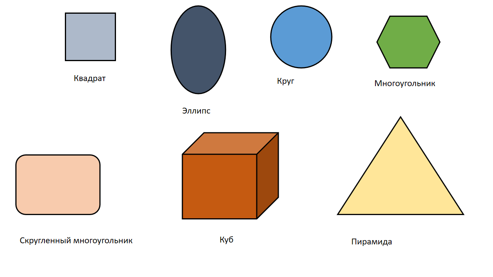

1.Программа «Касперский» — антивирусное программное обеспечение, разрабатываемое «Лабораторией Касперского». Назначение программы Программа обеспечивает защиту от вредоносных программ (вирусов, троянов, шпионских программ и других). Также она защищает от неизвестных угроз с помощью проактивной защиты. Применение программы Программа «Касперский» применяется для защиты разных устройств и систем: Компьютеры (Windows, Mac, Linux). Мобильные устройства (Android, iOS). Корпоративные сети (например, с помощью продукта Kaspersky Security для бизнеса). kaspersky.datasystem.ru Принцип работы программы Работа программы «Касперский» основана на нескольких принципах: Сигнатурный анализ. Обнаружение вредоносного ПО путём поиска определённых строк или последовательностей байтов в сканируемых файлах. Эвристический анализ. Позволяет обнаруживать вредоносные объекты, которые ещё не внесены в базы данных сигнатур. Эмуляция. Подозрительные файлы запускаются в изолированной виртуальной среде, что позволяет выявить вредоносные действия без риска поражения физической системы. Облачные технологии. Используются для быстрого обновления баз данных и получения информации о новых угрозах в реальном времени. Машинное обучение. Алгоритмы анализируют большие объёмы данных и выявляют паттерны, характерные для вредоносного кода.
2.
| Формулы механического движения | ||||
|---|---|---|---|---|
| Равномерное прямолинейное |
Равноускоренное прямолинейное |
Равномерное движение по окружности |
||
| Любое | Свободное падение |
|||
| Ускорение | a = 0 | a = (V - V₀) / t | g = 9,8 м/с² | a = V² / R |
| Мгновенная скорость |
V = const V = S / T |
V = V₀ + at | V = V₀ + gt | V = l / t |
3.
